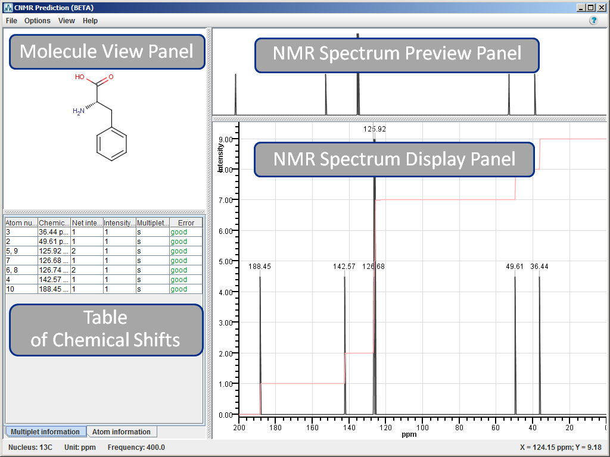
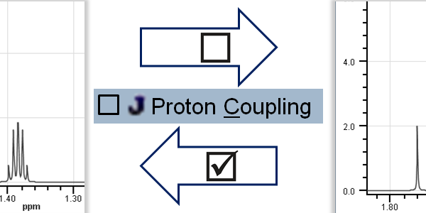
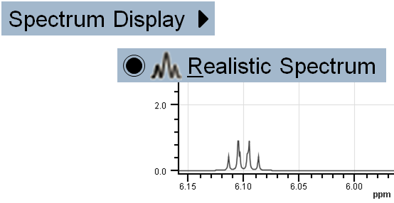

NMR Prediction - Tool to predict 13C and 1H Nuclear Magnetic Resonance spectra
NMR Prediction - 13C and 1H NMR predictor
NMR Prediction is integrated into MarvinSketch and is able to predict carbon-13 and hydrogen-1 nuclear magnetic resonance (13C NMR and 1H NMR) spectra for standard organic molecules drawn in MarvinSketch. Chemical shifts are estimated by a linear model based on a topological description scheme, and they are relative to the chemical shift of tetramethylsilane (δ(TMS)=0 ppm).
NMR Prediction - Usage
You can predict 13C NMR and 1H NMR spectra of organic molecules drawn in MarvinSketch using the relevant prediction in Calculations menu.
- Draw molecule in MarvinSketch.
- Go to Calculations > NMR >
- CNMR Prediction to discover the predicted 13C NMR spectrum of the molecule, or
- HNMR Prediction to discover the predicted 1H NMR spectrum of the molecule.
- The predicted spectrum will open in CNMR Prediction window if you chose CNMR Prediction, and in HNMR Prediction window if you chose HNMR Prediction, respectively.
Note: You can predict both spectra of the molecule in question which will open in separate windows.

Both NMR Prediction windows consist of a menu and four panels. The name of the window is displayed at the top left corner. At the bottom left corner of the status bar general information on the NMR prediction is shown, i.e., nucleus, measurement unit, and prediction frequency; while at the bottom right corner are the coordinates of mouse cursor position on the NMR Spectrum Display Panel. We will discuss the menu elements and panels of both 13C and 1H NMR Prediction windows together. Differences will be marked by the appropriate icon ( : CNMR Prediction,
: CNMR Prediction,  : HNMR Prediction).
: HNMR Prediction).
Back to top
NMR Prediction Menu
The menu contains File, Options, View, and Help elements.
File menu
is to export spectra to various molfiles or JCAMP-DX file format, to import spectrum of JCAMP-DX file format and superimpose it on predicted NMR spectrum, to remove the imported spectrum, and to close NMR Prediction.
Options menu
is to select optional NMR prediction settings:
- Proton Coupling: Prediction considers spin-spin coupling; the result is splitting of signals into multiplets according to the interaction between two nuclei.
- Implicit Hydrogen Mode: Hydrogens are displayed only on hetero and terminal atoms.
Note If you switch off this mode:
- all hydrogens will be visible on Molecule Panel;
- atoms will be re-numbered on all corresponding panels.
- NMR Prediction Frequency: Select prediction frequency from the predetermined list. Prediction frequency influences the fine structure of the spectrum.
View menu
is to select different display options related to the predicted spectrum and the molecule structure:
- Spectrum Display:
- Realistic Spectrum: Display predicted spectrum in a realistic way.
- Line Spectrum: Predicted chemical shifts are presented by distinct lines with proper intensity.
- Integral Curve: Display red integral curve on spectrum. Default setting is: on.
- Measurement Unit: The chemical shift of tetramethylsilane (TMS) is set to zero, and all other chemical shifts are predicted relative to it. Display unit can be:
- Spectrum Labels: In order to assign signals and relevant atoms more easily, you can display the atom numbers or the chemical shift values of each signal on the NMR Spectrum Display Panel. Select:
- Atom Numbers to see atoms assigned to each signal and to display atom numbers on Molecule View Panel as well.
- Chemical Shifts to see the exact chemical shift value of NMR signals on NMR Spectrum Display Panel.
- None to remove spectrum labels.
Note that you can display only one type of label at a time.
- Reference Spectrum is an imported JCAMP-DX NMR spectrum, that can be superimposed on the predicted NMR spectrum.
- Display Shifts: If the imported JCAMP-DX file has "PEAKTABLE" property, the chemical shifts of the imported spectrum can be displayed.
- None: Remove chemical shift labels of the reference spectrum.
- Select Individual Multiplets: In case of overlapping multiplets, this option enables highlighting individual multiplets.
- Set Chart Colors: You can customize the color of the predicted spectrum, reference spectrum, and selection.
- Zoom Follows Selection: If you select an exact atom on Molecule View Panel, or a signal on NMR Spectrum Display Panel, the appropriate signal is centered and zoomed in on NMR Spectrum Display Panel.
- Zoom Mode: You can set the movement of magnification.
- X-Axis: Zoom in and out on NMR Spectrum in X-axis direction only.
- Both Axes: Zoom in and out on NMR Spectrum in both axes coherently.
- Zoom In
- Zoom Out
- Reset Zoom
Help menu
Back to top
NMR Prediction Panels
NMR Prediction window contains Molecule View Panel, Table of Chemical Shifts, NMR Spectrum Preview Panel, and NMR Spectrum Display Panel to present the predicted spectrum and to display selected features.
Molecule View Panel
Displays the molecule of prediction. Molecule has to be drawn in MarvinSketch.
If you select View > Spectrum Labels > Atom Numbers, atom numbers will appear on both Molecule View Panel and NMR Spectrum Display Panel.
Table of Chemical Shifts
The following tabs are available on this panel: Multiplet information, Atom information, and Coupling information tabs. Table on all tabs contains data of the predicted spectrum in Multiplet or Atom point of view. Coupling table contains the calculated coupling constants when Proton coupling option is selected.
Multiplet information
Table has six columns, namely: Atom numbers, Chemical shift, Net intensity, Intensity pattern, Multiplet information, and Quality.
- Atom numbers are the numbers displayed on the molecule structure and are assigned automatically.
- Chemical shift values are displayed in the selected Measurement Unit.
- Net intensity is the integration value of the relevant signal.
- Intensity pattern describes the relative intensity of the multiplet elements.
- Multiplet information is the conventional one letter abbreviation of multiplicity, e.g.: s - singlet; d - doublet; t - triplet; ...
- Quality defines the prediction quality according to our validation method. Definitions: good, medium, rough.
Atom information
Table has five columns, namely: Atom number, Chemical shift, Net intensity, Multiplet information, and Quality.
- Atom numbers are the numbers displayed on the molecule structure and are assigned automatically.
- Chemical shift values are displayed in the selected Measurement Unit.
- Net intensity is the integration value of the relevant signal.
- Multiplet information is the conventional one letter abbreviation of multiplicity, e.g.: s - singlet; d - doublet; t - triplet; ...
- Quality defines the prediction quality according to our validation method. Definitions: good, medium, rough.
Coupling information
Table has four columns, namely: Atom 1, Atom 2, Value, and Quality.
- Atom 1 and Atom 2 are the number of atoms that the coupling constant is connected to.
- The value of the coupling constant is displayed in the selected Measurement Unit.
- Quality defines the prediction quality according to our validation method. Definitions: good, medium, rough.
NMR Spectrum Preview Panel
Displays the whole predicted spectrum. You can zoom in and out on spectrum by using X-Axis or Both Axes Zoom Modes.
- If you want to zoom in on specific region of the spectrum, use left-click and drag on NMR Spectrum Preview Panel. The background of the selected region will turn to white, while unselected region of the spectrum will turn to grey.
- You can move the selection window by left-clicking into the middle of the selection window; hold mouse button while moving the selection, and release button to place it.
- You can resize the selection window if you grab-and-drag its yellow side frame.
NMR Spectrum Display Panel
Displays the appropriate zoom region of the spectrum.
Move your mouse pointer over the NMR Spectrum Display Panel and use mouse-wheel to zoom in and out on NMR spectrum. The magnification direction is in accordance to the selected Zoom Mode.
Examples
Toggle Proton Coupling: Options > Proton Coupling

Toggle Implicit Hydrogen Mode: Options > Implicit Hydrogen Mode
Change default setting to: View > Spectrum Labels > Atom Numbers; Zoom in on the certain spectrum region.

Switch between Realistic and Line Spectrum display: View > Spectrum Display >

Select Individual Multiplets:

Back to top


{kind=link}
{kind=link}